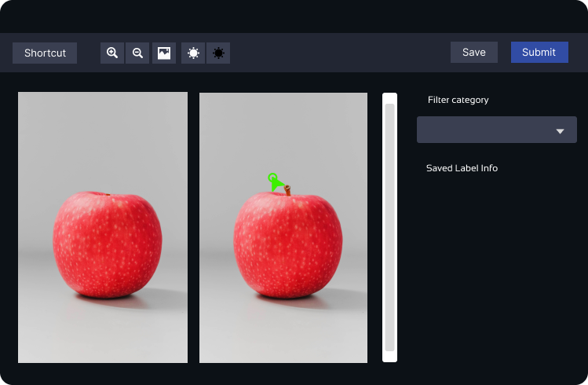
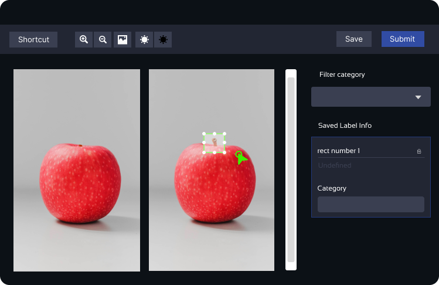
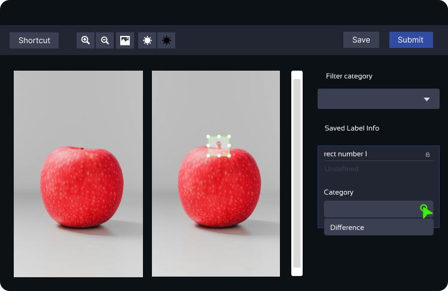
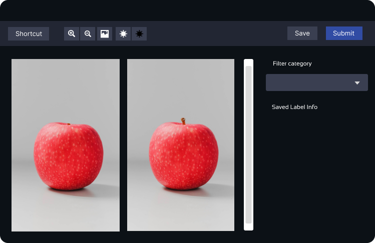
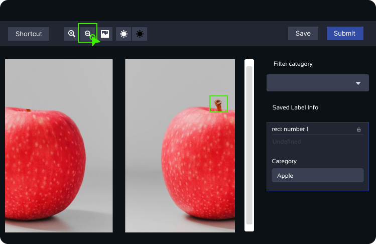
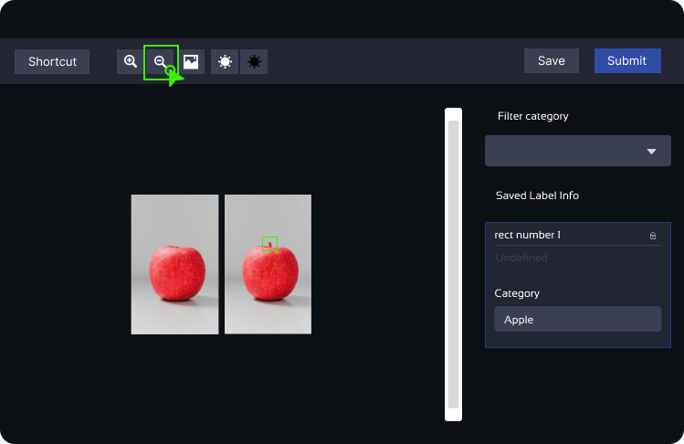

Assessment Instructions
Please follow the steps below to complete the assessment:
-
Application Form:
Click here to fill the form (Important)
Complete the required Google Form application before proceeding. Ensure all details are correct.
-
Dashboard App Registration:
Click here to register on the dashboard
Create an account on the Dashboard App for the subsequent tests.
-
Tests:
- Test 1: Complete this Google Quiz App first.
- Test 2: Proceed to this test after completing Test 1.
- Test 3: Complete this final test after finishing Test 2.
Note: Follow this sequence to ensure the successful completion of the assessment.
Computer Knowledge Test
The first test you are about to take is designed to assess your basic understanding of computer setup parts and how to use a web browser.
Part 1: Identify Computer Setup Parts
In this part of the test, you will be asked to identify various components that make up a computer setup:
- Monitor (the screen you look at)
- Keyboard (used for typing)
- Mouse (used for pointing and clicking)
- Other essential parts
Part 2: Use a Web Browser
In this part, you will be evaluated on your ability to use a web browser. Tasks include:
- Searching for information
- Opening websites
- Navigating between web pages
- Using basic browser features
Spot the Difference Test Instructions
Welcome to the spot-the-difference test! This simple test requires you to identify the dissimilarities between two pictures that appear quite similar at first glance. Your task is to use an AI web tool called "Legacy Tool" to draw boxes around the identified differences.
Instructions:
- Identify the Differences: Look closely at the two images provided and identify any variations between them. It could be anything, like a missing cup or any other object that appears in one image but not in the other.
- Drawing the Boxes: To mark the differences, use the Legacy Tool by clicking and dragging your mouse over the area where you spot the difference. This action will draw a box around the identified dissimilarity.  
- Selecting a Category: After drawing the box, you'll notice a dialog on the far right of the screen, called the "Category Menu." From the drop-down menu in this dialog, select "Difference" as the category for the box you drew. 
- Repeat for Each Difference: Every time you identify a difference between the images, click and drag your mouse to draw a box around that area, and then choose "Difference" from the category menu.
- Submit and Move On: Once you have marked all the differences you can find, click on the "Submit" button to complete the current task. You will then proceed to the next test.
Other Functions of the Tool:
- Delete a Box: If you need to remove a box you drew, make sure it is selected, and then press the "d" key on your keyboard to delete it. Alternatively, you can press "d" right after drawing the box to delete it instantly. 
- Zoom In and Out: The Legacy Tool provides buttons to adjust the image size for better viewing. Use the "Zoom In" and "Zoom Out" buttons in the tool menu. Alternatively, you can use the keyboard shortcuts "+" and "-" after "0" on the keyboard to zoom in or out.  
We wish you the best of luck in completing the test! If you have any questions, feel free to ask the instructor. Once you have finished identifying the differences, you can move on to the next test. Enjoy the challenge and have fun!
Start Test 2